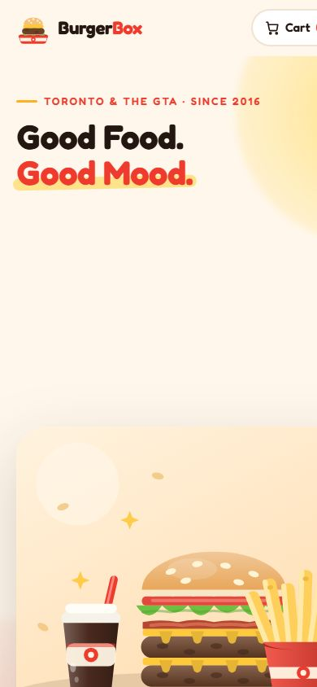

01Front-end · Brand
BurgerBox
A fictional fast-food brand, built like a real one.
A full ordering experience for a made-up burger chain: the menu is data-driven, every item opens a customiser for size, toppings and sauces, and the cart and checkout work from end to end. All of the food art is hand-drawn SVG, so the site ships without a single photo.
- Data-driven menu, item customiser, cart and demo checkout
- Hand-drawn SVG illustration instead of image files
- Layout holds up from phone to widescreen